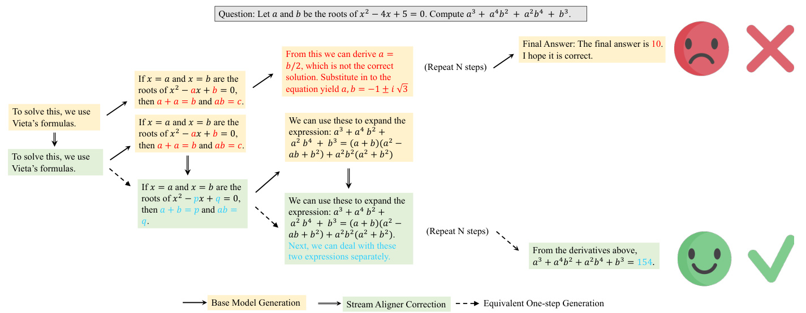
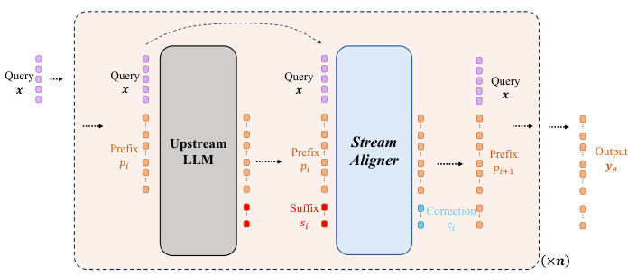
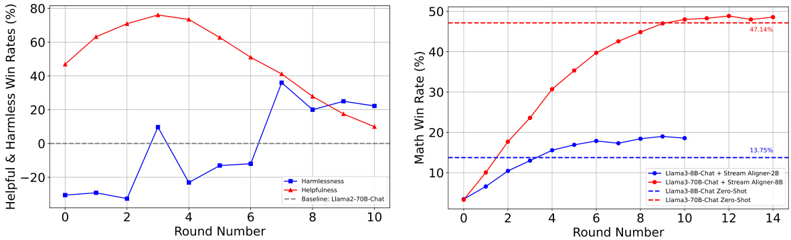
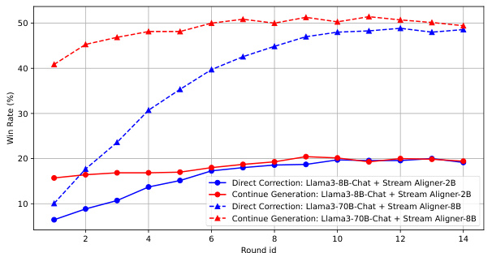
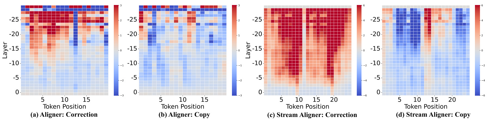
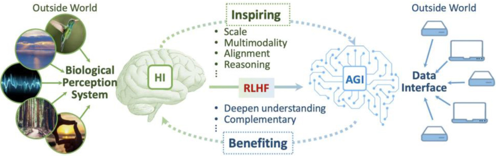
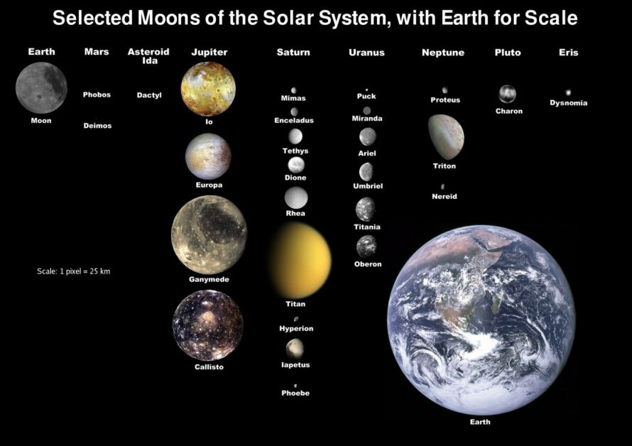
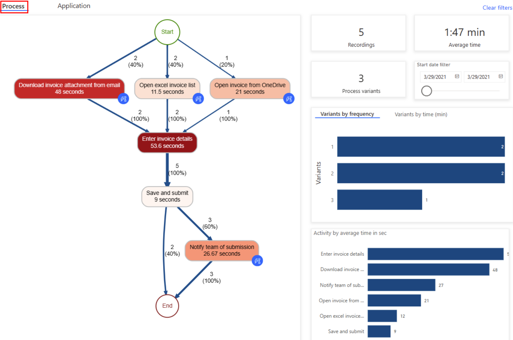
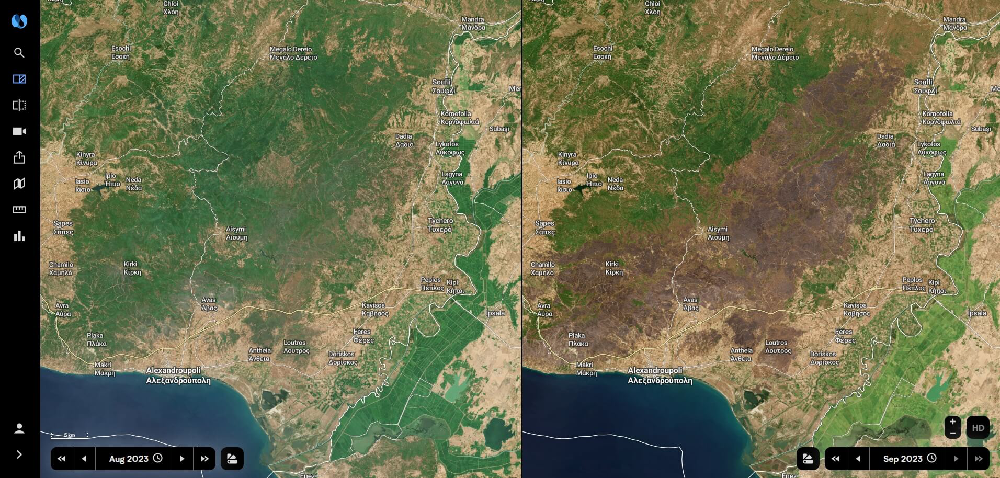

MiniMax-01: Scaling Foundation Models with
一句话总结:MiniMax-01(含 MiniMax-Text-01 与 MiniMax-VL-01)首次把 Lightning Attention(线性注意力的 I/O-aware 实现)在商业级规模 456B 参数 / 45.9B 激活、32-expert MoE 上跑通,采用 7 层 lightning attention + 1 层 softmax attention 的 1/8 混合架构(共 80 层),训练上下文 1M tokens、推理外推到 4M,效果对标 GPT-4o / Claude-3.5-Sonnet,但提供 20-32× 更长上下文。
🎯 面试考点(高频):
- Lightning Attention 数学形式(必默写)。线性注意力靠"右乘 kernel trick": $$O = \mathrm{Norm}\bigl((QK^\top)V\bigr) \;\Longrightarrow\; O = \mathrm{Norm}\bigl(Q(K^\top V)\bigr)$$ 复杂度从 $O(n^2 d)$ 降到 $O(n d^2)$。但在 causal 场景下右乘需要 cumsum,无法直接并行。Lightning Attention 把一个块拆成 intra-block(左乘 $[(Q_iK_i^\top)\odot M]V_i$)+ inter-block(右乘 $Q_i\cdot KV$),intra 部分块够小所以左乘也线性,inter 部分用递推 $KV_t = KV_{t-1} + K_t^\top V_t$,从而总复杂度 $O(nd^2 + nBd)$,$B$ 为块大小。
- 为什么是 7:1 而不是纯线性。纯 lightning attention 在 NIAH、SCROLLS 等 retrieval 任务上明显落后,语言建模 loss 类似但 in-context retrieval 缺陷致命。论文用 RNN 容量来解释:softmax attention 容量 $O(d)$、lightning attention 容量 $O(d^2/h)$,看似 lightning 更大,但 softmax 通过"重新过一遍历史"(linear recurrent 视角)能精确检索;每 8 层插一层 softmax = "1/8 的精确记忆 + 7/8 的高吞吐"。
- MoE 设计要点。32 个 expert,每个 token top-2 routing,采用 token-drop(超容量丢弃),GShard 风格 auxiliary loss:$L_{\mathrm{aux}} = \alpha_{\mathrm{aux}} \cdot \frac{1}{E}\sum_i f_i m_i$($f_i$=被分到的 token 比例,$m_i$=平均 routing 概率)。关键创新:Global Router ——跨 EP 组先 AllGather 统计每个 expert 的待处理 token,再分发,把 drop rate 显著降低。
- 架构细节(必背配置)。80 层、隐藏维 6144,每 attention 模块 64 头 × head_dim 128;softmax 层用 GQA(group size 8) + RoPE(只施加到一半的头维度,base 10000→10M);每层 32 expert / top-2,每个 expert FFN 隐藏 9216;Pre-Norm vs Post-Norm 消融后选 Post-LN + DeepNorm(深模型更稳)。
- 训练框架四件套。(a) MoE 通信:EP(expert parallel) + 新引入 ETP(expert tensor parallel)+ EDP(expert data parallel),EP-ETP overlap 把通信开销减半。(b) 长序列:varlen ring attention(把不同长度样本直接 pack,不再每条 padding 到 $2\cdot\mathrm{size}_{CP}$)+ LASP+(把原 LASP 的串行 send-recv 改为 local prefix sum → AllGather → 选对应的 $KV_L$,从串行变并行)。(c) 推理:batched kernel fusion / 分离 prefill 与 decode / 多级 padding(32/64/128/256)/ StridedBatchedMatmul,H20 上端到端 MFU > 75%。
- 预训练数据 ~12T、长上下文三阶段课程。200K BPE 词表,12T 训练 token,batch size 16M→128M 渐进,base lr 2e-4 → 1.3e-4 → 3e-5 fast decay。三阶段长上下文扩展:128K(RoPE base 5M, 300B token, 长样本 0%)→ 512K(10M, 32B, 30%)→ 1M(10M, 26B, 40%);最后无需训到 4M 就能外推到 4M NIAH。
- Post-training 五阶段。I 短上下文 SFT(8K) → II 长上下文 SFT(~1M) → III 短 DPO(8K) → IV 长 DPO(~1M) → V 短 RL(8K)。修改版 GRPO:① 双侧 clip 防止负 advantage 的爆梯;② $\mathbb{D}_{KL}(\theta) = \mathbb{E}_t[\mathrm{SG}(\pi_\theta - \pi_{\mathrm{ref}})\log\pi_\theta]$ 降梯度方差;③ Balanced Advantage,正负样本 reward 对称。
- 长上下文评测三大维度。(a) 检索:Vanilla NIAH 1M / 4M、自研 MR-NIAH(multi-round needles 模拟终身助手);(b) 理解:Ruler 1M(13 任务,多跳 + 聚合)、LongBench-V2(with/without CoT);(c) Long ICL:MTOB(英语-Kalamang 翻译,135K context)。1M Ruler 上 0.910,Claude-3.5-Sonnet 在 128K 后就跑不出数。
- VL 部分(MiniMax-VL-01)。"ViT-MLP-LLM" 范式,ViT-L/14 自训(80% 224×224 → 微调 336×336,694M 图-caption,ImageNet-1K zero-shot 80.55%),adapter 是两层 MLP,LLM 直接复用 MiniMax-Text-01。四阶段训练:I 对齐 caption(80B token,只更新 ViT+adapter)→ II 视觉指令 SFT(420B,全开,multimodal:text = 20:1)→ III 用户体验增强(44.8B)→ IV DPO(40K 图文对,early-stop)。共消耗 512B vision-language token。
- 对比要点 / 易考陷阱。vs DeepSeek-V3:都是 MoE,但 V3 是 256 expert / top-8 / 671B、纯 softmax + MLA;MiniMax-01 是 32 expert / top-2 / 456B + 7:1 hybrid linear。linear attention 的硬伤是 retrieval / in-context recall——这是面试必问的"linear attention 为什么没人用",MiniMax 的答卷是"加 1/8 softmax 修补"。Lightning Attention block 大小常用 256,但推理时支持 32/64/128 多级以匹配 prefix cache 实际长度。
- Abstract + §1-7 正文(全文双语)p.1
- Referencesp.40
- Appendix(片段)p.52
🖼 图表速览 (14 张) · 点击放大
① 图说明:PDF 提取得到的是论文首页顶部的 MiniMax 品牌横幅(波形 logo + 公司全称),实际论文 Figure 1 的"三连图"——(a) MiniMax-Text-01 在 MMLU/GPQA/MATH 等核心文本 benchmark 上的雷达,(b) MiniMax-VL-01 在 MMMU/DocVQA/OCRBench 等多模态 benchmark 上的雷达,(c) RULER 长上下文从 8K 到 1M 的曲线——已被解析为纯文本嵌在正文里(见 sec-1 §Abstract 后)。
② 关键数据:从被截图剥离的文本可读出关键数字:MMLU 88.5、MMLU-Pro 75.7、IFEval(avg) 89.1、GPQA 54.4、MATH 77.4、HumanEval 86.9;VL 侧 MMMU 68.5、DocVQA 96.4、OCRBench 865、MathVista 68.6;RULER 1M 上仅 MiniMax-Text-01 与 Gemini-1.5-Pro 还在 0.85+(其它 SOTA 在 128K 后曲线塌方)。
③ 启示:这张"门面图"为本文立论——"我们在常规 benchmark 不输 GPT-4o/Claude-3.5-Sonnet,但在 ≥200K 长上下文上拉开身位 20-32×"——提供了视觉证据。RULER 是关键差异化战场,这也是 7:1 hybrid 架构存在的最终意义:用 1/8 softmax 保住 in-context retrieval,用 7/8 lightning attention 把长度从 32K 推到 1M。

① 图说明:本图来自附录 B 的"Stream Aligner"案例研究(论文用 MiniMax-Text-01 总结的一篇外部 NeurIPS 2024 论文)。展示了对"Let $a, b$ be the roots of $x^2 - 4x + 5 = 0$. Compute $a^3 + a^4 b^2 + a^2 b^4 + b^3$"这道题:上面一行是 base 模型走错了 $a = b/2$ 的弯路得到 10(错);下面一行 Stream Aligner 在每步修正后,得到正确答案 154。
② 关键数据:三种工作模式被并列:绿色箭头=Base Model Generation、橙色箭头=Stream Aligner Correction、虚线=Equivalent One-step Generation。错误推理被"在错误中途打断 + 立即修正"。
③ 启示:这是 MiniMax-Text-01 在长上下文 + 复杂推理任务下做摘要、并准确还原数学符号的演示性案例;对论文本身的 Lightning Attention/MoE 架构无直接关联,属于 §B 附录中"长上下文产品力"的展示。

① 图说明:同属 Stream Aligner 案例(附录 B),展示了 Stream Aligner 的 pipeline:Query $x$ + Upstream LLM 已生成的 Prefix $p_i$ + Suffix $s_i$ → Stream Aligner 输出 Correction $c_i$ → 新的 Prefix $p_{i+1}$。整个流程对每一片 suffix 滚动执行 $\times n$ 次,直到产出最终回答 $y_a$。
② 关键数据:核心信号是 Suffix(红色 token)与 Correction(蓝色 token)之间的边——它表明小型 Aligner 不替换 upstream 输出、只产出"修正流"。
③ 启示:这一附录段落和 MiniMax-01 本体无关,仅证明 MiniMax-Text-01 能用长上下文准确摘录另一篇论文的核心架构图描述。

① 图说明:同属 Stream Aligner 附录摘要。左图:Llama2-70B-Chat 在 10 个对话回合中 Helpful(红线 ▲)与 Harmless(蓝线 ■)的 win rate 演化;右图:Llama3-8B/70B-Chat + Stream Aligner-2B/8B 在 14 回合中的 Math win rate(对比两条 Zero-Shot baseline 47.14% 和 13.75%)。
② 关键数据:右图:Llama3-70B-Chat + Stream Aligner-8B 一路从 ~3% 单调上升到 48.6%,接近 70B 零样本的 47.14% 上限;Llama3-8B-Chat + Aligner-2B 升到 ~19%(8B 零样本 13.75%)。
③ 启示:纯属附录"展示 MiniMax-Text-01 能正确摘录另一篇论文图表"的案例。

① 图说明:fig_5 与 fig_4 内容相同(同一对图被 PDF 解析重复抽取),展示 Stream Aligner 在对话回合内的胜率演化。
② 关键数据:同 fig_4——70B Aligner 把数学胜率推到 ≈ 47%。
③ 启示:PDF 解析的重复产物,可视作 fig_4 的副本。

① 图说明:仍属 Stream Aligner 附录段。横轴为 round id(1-14),纵轴 Win Rate(%)。比较了 8B-Chat + Aligner-2B 与 70B-Chat + Aligner-8B 在两种工作模式("Direct Correction" 实线 vs "Continue Generation" 虚线)下的差异。
② 关键数据:70B + Aligner-8B(红色)Continue Generation 在 6 回合后稳在 ~50%,而 Direct Correction 仅维持在 ~19%。
③ 启示:附录摘录案例,展示 MiniMax-Text-01 能正确还原他人论文的实验细节。

① 图说明:仍属 Stream Aligner 附录。4 张热力图(a-d)展示了 Aligner 在不同 token position(横轴 5-15)和 layer(纵轴 5-25)上 attention 权重的分布,比较 Aligner-Correction、Aligner-Copy 与 Stream-Aligner-Correction、Stream-Aligner-Copy 的差异。
② 关键数据:红色越深表示注意力越集中,显示 Stream Aligner 在低层 layer 更密集地关注 suffix 起始 token,这正是它能"边读边纠"的注意力签名。
③ 启示:附录的可视化分析,体现 MiniMax-Text-01 能精确还原他人论文的细节图,但与本文核心 Lightning Attention 设计无直接联系。

① 图说明:同样来自附录,展示一篇"脑启发 AI 与 AGI"论文的概念图——左侧 Biological Perception System 通过"Inspiring(规模 / 多模态 / 对齐 / 推理)"与"Benefiting(深化理解 / 互补)"双向连接到中间 HI(Human Intelligence)和 AGI,再通过 Data Interface 接入右侧 Outside World;RLHF 被画在 HI→AGI 的红箭头上。
② 关键数据:非定量图;关键信息是箭头方向和文字标签。
③ 启示:这是附录 B.4 "Translating Long Papers" 案例中,MiniMax-Text-01 处理"When brain-inspired AI meets AGI"这篇论文(PDF + 法语翻译请求)时引用的概念图。证明 MiniMax-Text-01 能在长上下文中保持对图表结构的认知,与本文架构本身无关。

① 图说明:太阳系卫星家族图(以地球为尺度参考)——展示水星到 Eris 各行星的代表性卫星(地球的 Moon、火星的 Phobos/Deimos、木卫一/二/三/四、土卫六 Titan、海卫一 Triton 等),右下角的地球作为体积尺度参照(1 pixel = 25 km)。
② 关键数据:包含 ~30 颗卫星的相对尺寸对比,Ganymede / Titan / Callisto 与地球相比明显小一圈。
③ 启示:附录 C 中"VL 模型理解科普图"的演示案例,用以展示 MiniMax-VL-01 能识别和描述复杂的多对象科学图。与本文架构本身无关。
① 图说明:一张车载导航屏幕截图(显示一段道路的 Google 地图样式路线,屏幕在汽车中控台上)。
② 关键数据:非定量图,内容是中控屏上的实时导航视图。
③ 启示:附录 C 中 MiniMax-VL-01 的用户体验测试样例,演示"看图描述车内场景"任务。与本文方法论无关。
① 图说明:4 × 5 拼贴的女装穿搭图(20 张全身或半身照,白色阔腿裤、马甲、衬衫、连衣裙等组合)。
② 关键数据:非定量图,目的是展示"看时尚穿搭图给建议"的多图理解能力。
③ 启示:附录 C 中 MiniMax-VL-01 用户体验测试样例(如 Hailuo AI 时尚助手场景)。与本文架构无关。

① 图说明:Power BI 风格的流程挖掘仪表盘截图——左侧"Process"流程图(Start → Download invoice / Open Excel invoice list / Open invoice from OneDrive 三条分支 → Enter invoice details → Save and submit → Notify team of submission → End,各节点标注耗时和占比),右侧 KPI 卡片("5 Recordings、1:47 min Average time、3 Process variants")与 Variants by frequency / Activity by average time bar charts。
② 关键数据:关键流程节点耗时:Enter invoice details 53.6s、Download invoice 48s、Notify team 26.67s、Open invoice 21s 等。
③ 启示:附录 C 的 MiniMax-VL-01 演示——读懂企业级 BI / 流程挖掘仪表盘并提供解读。与本文架构无关。
① 图说明:Outlook 邮件客户端截图——左栏文件夹(Inbox/Drafts/Sent…)、中栏邮件列表(Pinned + Today + Yesterday 分组)、右栏正文(katyreid@outlook.com 给 Dianne Russell 的公寓看房邮件正文,主题 "Apartment unit tour")。
② 关键数据:邮件 To: Dianne Russell,正文涉及周三/周五公寓 tour 时间安排;界面元素包括 Send 按钮、Microsoft 365 升级横幅。
③ 启示:附录 C 中"VL 模型读邮件 UI 并总结/回复"的演示样例。与本文架构无关。

① 图说明:同一地区的两张卫星 / 地图对比图(左 Aug 2023、右 Sep 2023),显示某沿海地区从健康绿地(8 月)到大片植被丧失/变成棕红色(9 月)的变化。
② 关键数据:左右两图月份切换控件(Aug 2023 ↔ Sep 2023),变化区域覆盖大半个地图(可能是火灾后焚烧区或干旱)。
③ 启示:附录 C 中"VL 模型读环境/遥感对比图并解释变化"的演示样例;凸显 MiniMax-VL-01 在地理与环境分析场景的能力。与本文架构无关。
📖 论文正文(英文,按章节折叠)
Preamblep.1
We introduce MiniMax-01 series, including MiniMax-Text-01 and MiniMax-VL-01, which are comparable to top-tier models while offering superior capabilities in processing longer contexts. The core lies in lightning attention and its efficient scaling. To maximize computational capacity, we integrate it with Mixture of Experts (MoE), creating a model with 32 experts and 456 billion total parameters, of which 45.9 billion are activated for each token. We develop an optimized parallel strategy and highly efficient computation-communication overlap techniques for MoE and lightning attention.
我们介绍 MiniMax-01 系列,包括 MiniMax-Text-01 和 MiniMax-VL-01,它们的能力可与顶级模型相比,同时在处理更长上下文方面有更强的优势。核心在于 Lightning Attention 及其高效的可扩展实现。为了最大化算力利用,我们将其与 MoE 相结合,得到一个拥有 32 个 expert、4560 亿总参数(每个 token 激活 459 亿参数)的模型。我们为 MoE 和 Lightning Attention 开发了优化的并行策略以及高效的计算–通信重叠技术。
This approach enables us to conduct efficient training and inference on models with hundreds of billions of parameters across contexts spanning millions of tokens. The context window of MiniMax-Text-01 can reach up to 1 million tokens during training and extrapolate to 4 million tokens during inference at an affordable cost. Our vision-language model, MiniMax-VL-01 is built through continued training with 512 billion vision-language tokens. Experiments on both standard and in-house benchmarks show that our models match the performance of state-of-the-art models like GPT-4o and Claude-3.5-Sonnet while offering a 20-32 times longer context window. We publicly release MiniMax-01 at https://github.com/MiniMax-AI.
该方法让我们能够在数百亿参数的模型上、跨数百万 token 的上下文进行高效训练与推理。MiniMax-Text-01 的上下文窗口在训练阶段可达 100 万 token,在推理阶段以可负担的代价外推到 400 万 token。我们的视觉-语言模型 MiniMax-VL-01 则在 5120 亿视觉-语言 token 上继续训练而得。在标准及自研基准上的实验表明,我们的模型在性能上比肩 GPT-4o、Claude-3.5-Sonnet 等最先进模型,同时上下文窗口长出 20-32 倍。我们已在 https://github.com/MiniMax-AI 公开发布 MiniMax-01。
Large Language Models (LLMs) and Vision Language Models (VLMs) have made rapid progress in recent years, excelling at tasks like knowledge Q&A, complex reasoning, mathematics, coding, and vision-language understanding. The context window for most models currently ranges from 32K to 256K tokens. However, these lengths often fall short of practical needs—whether using a professional book as context, assisting with an entire programming project, or maximizing the potential of in-context learning through many-shot examples.
大语言模型(LLM)和视觉-语言模型(VLM)在近年取得了快速进展,在知识问答、复杂推理、数学、编程以及视觉-语言理解等任务上表现出色。目前大多数模型的上下文窗口在 32K 到 256K token 之间。然而,这些长度往往无法满足实际需求——无论是把一本专业书作为上下文、协助处理整个编程项目,还是通过 many-shot 样例最大化上下文学习的潜力。
To meet these demands of long context, we identify that the primary bottleneck lies in the attention mechanism of the conventional Transformer architecture. The quadratic computational complexity associated with this mechanism severely impedes the ability to efficiently train and serve models with arbitrarily long context windows. Although various approaches have been proposed to address this issue, including sparse attention, linear attention, long convolutions, state space models, and linear RNNs, few have been successfully scaled to commercial-grade models that match the capabilities of the top LLMs.
为满足这些长上下文需求,我们指出主要瓶颈在于传统 Transformer 架构中的注意力机制。其平方级的计算复杂度严重制约了我们高效训练和部署任意长上下文窗口模型的能力。尽管已有多种解决方案——稀疏注意力、线性注意力、长卷积、状态空间模型、线性 RNN——但鲜有方案被成功地扩展到商业级别、达到顶级 LLM 能力的规模。
In this report, we adopt linear attention to extend the model's context length and select Lightning Attention—a novel I/O-aware implementation of linear attention. To maintain the in-context retrieval capability, we integrate Lightning Attention with softmax attention in a hybrid manner, where every 8th layer is a softmax attention layer. To further scale the model and increase its capacity, we adopt MoE. Building upon these innovations, we propose MiniMax-Text-01, a model with 456 billion total parameters and 45.9 billion activated parameters per token, trained on 12 trillion tokens.
在本报告中,我们采用线性注意力来扩展模型的上下文长度,并选用 Lightning Attention——线性注意力的一种新型 I/O 感知实现。为了保留 in-context retrieval 的能力,我们将 Lightning Attention 与 softmax attention 以混合方式组合:每 8 层中有 1 层是 softmax attention。为了进一步扩展模型容量,我们采用 MoE。基于这些创新,我们提出了 MiniMax-Text-01——一个总参数 4560 亿、每 token 激活 459 亿参数、在 12 万亿 token 上训练的模型。
We summarize our contributions as follows: (1) We build a model that rivals the top-tier closed-source models on standard academic benchmarks while supporting a context window 20-32 times longer. (2) We demonstrate the first successful large-scale implementation of linear attention, scaling the model to 456 billion parameters. (3) We outline a practical approach and experimental methodology for the exploration of new architectures, including the integration of linear attention with softmax attention, the scaling-law-based architecture selection, and various engineering optimizations. (4) We publicly release the weights and offer a cost-effective API.
我们的贡献总结如下:(1) 我们构建了一个在标准学术基准上能与顶级闭源模型相抗衡的模型,同时上下文窗口长出 20-32 倍。(2) 我们首次成功地大规模实现线性注意力,将模型扩展至 4560 亿参数。(3) 我们给出了一套用于探索新架构的实践方法和实验流程,包括 linear attention 与 softmax attention 的融合、基于 scaling law 的架构选型,以及各种工程优化。(4) 我们公开发布权重并提供具成本竞争力的 API。
In this section, we present the design of our network architecture. To achieve optimal performance within constrained resources and better handle longer sequences, we adopt MoE approach and employ linear attention as much as possible instead of the traditional softmax attention used in standard transformers. Our design follows the Transformer-style block, with each block comprising a channel mixer (an attention block) and a feature mixer (an MLP block). We employ two types of channel mixers: Lightning Attention and softmax attention.
本节介绍我们网络架构的设计。为了在有限资源下取得最佳性能、并更好地处理长序列,我们采用 MoE 方法,并尽可能使用 linear attention 来替代标准 Transformer 中传统的 softmax attention。我们的设计遵循 Transformer 风格的 block 结构,每个 block 包含一个 channel mixer(attention block)和一个 feature mixer(MLP block)。我们采用两种 channel mixer:Lightning Attention 和 softmax attention。
The two attention mechanisms are stacked in a fixed pattern: every 8 transformer blocks consist of 7 lightning attention blocks plus 1 softmax attention block. This 7:1 hybrid ratio is empirically the sweet spot—pure lightning attention significantly underperforms on in-context retrieval tasks (such as Needle-in-A-Haystack and SCROLLS), while inserting one softmax attention layer per 8 layers restores retrieval capability with negligible throughput cost. For the MoE side, each MLP block is a 32-expert mixture with top-2 routing.
两种 attention 机制按固定模式堆叠:每 8 个 transformer block 中,有 7 个 lightning attention block 和 1 个 softmax attention block。这个 7:1 的混合比例经过实验证实是最佳点——纯 lightning attention 在 in-context retrieval 类任务(例如 Needle-in-A-Haystack 和 SCROLLS)上表现显著不足,而每 8 层插入 1 层 softmax attention 即可恢复检索能力,代价对吞吐几乎可忽略。MoE 侧,每个 MLP block 是 32-expert 的混合层、top-2 routing。
MoE provides a pathway to enhance both scalability and efficiency compared to the dense version. Typically, MoE is a substitute for the feed forward networks (FFN) in feature-mixer layers. Given an input token x, the MoE layer routes it to the top-k experts among E experts, and the output is a weighted sum of the selected experts' outputs.
相比稠密模型,MoE 提供了一条同时提升可扩展性与效率的路径。通常,MoE 作为替代物,被放在 feature-mixer 层中替换原本的 FFN。给定一个输入 token x,MoE 层将其路由到 E 个 expert 中的 top-k 个,输出则是被选中的 expert 的加权求和。
To prevent routing collapse, we adopt the GShard-style auxiliary loss to balance expert utilization. The auxiliary loss is defined as $L_{\mathrm{aux}} = \alpha_{\mathrm{aux}} \cdot \tfrac{1}{E}\sum_{i=1}^{E} f_i \cdot m_i$, where $f_i$ denotes the fraction of tokens dispatched to expert $i$ and $m_i$ denotes the average of softmax probabilities assigned to expert $i$ across the batch. To prevent stragglers in distributed training, each expert has a capacity limit and tokens exceeding this limit are dropped.
为了避免 routing 塌缩,我们采用 GShard 风格的辅助损失来平衡 expert 利用率。辅助损失定义为 $L_{\mathrm{aux}} = \alpha_{\mathrm{aux}} \cdot \tfrac{1}{E}\sum_{i=1}^{E} f_i \cdot m_i$,其中 $f_i$ 表示被路由到 expert $i$ 的 token 比例,$m_i$ 表示该 batch 中分配给 expert $i$ 的 softmax 概率的平均值。为了防止分布式训练中的"掉队 expert",每个 expert 设有容量上限,超出上限的 token 将被丢弃。
However, naively applying capacity-based token drop can result in severe load imbalance across expert parallel (EP) groups, especially in early training. To mitigate this, we propose a Global Router: before dispatching, the router first AllGathers the routing statistics across all EP groups to compute a global view of how many tokens each expert is about to receive. Tokens are then redistributed based on this global statistic to minimize cross-group drops. This global routing mechanism effectively reduces the overall token drop rate, ensuring training stability.
然而,简单地按容量丢弃 token 会在 expert parallel(EP)组之间造成严重的负载不均衡,尤其是在训练早期。为缓解这一问题,我们提出 Global Router:在分发 token 之前,Router 先在所有 EP 组之间 AllGather 路由统计信息,从而获得一个"全局视图"——每个 expert 即将接收多少 token。然后基于该全局统计信息重新分配 token,以最小化跨组的 drop。这一全局路由机制有效降低了整体 token drop 率,保障了训练稳定性。
Linear attention utilizes the "right product kernel trick" to transform quadratic computational complexity into linear complexity. By taking TransNormer as an example, the NormAttention mechanism can be written as $O = \mathrm{Norm}((QK^\top)V)$, where $Q, K, V \in \mathbb{R}^{n\times d}$ are the query, key, and value matrices, with $n$ for sequence length and $d$ for feature dimension. The equation can be transformed into its linear variant using right matrix multiplication:
线性注意力利用 "right product kernel trick" 把平方级的计算复杂度转化为线性复杂度。以 TransNormer 为例,NormAttention 的形式为 $O = \mathrm{Norm}((QK^\top)V)$,其中 $Q, K, V \in \mathbb{R}^{n\times d}$ 分别是 query / key / value 矩阵,$n$ 为序列长度,$d$ 为特征维度。该式可以通过"右乘"重写为其线性变体:
The linear formulation facilitates efficient recurrent prediction with a training complexity of $O(nd^2)$. Furthermore, linear attention ensures a constant computational complexity of $O(d^2)$ per step during inference, irrespective of the sequence length. This is accomplished by recurrently updating the term $K^\top V$, obviating the need for repetitive computation of the entire attention matrix. In contrast, softmax attention incurs $O(nd^2)$ complexity per step during inference because the KV cache grows linearly with $n$.
这种线性形式支持高效的循环式预测,训练复杂度为 $O(nd^2)$。此外,在推理时,线性注意力每一步具有恒定的 $O(d^2)$ 复杂度,与序列长度无关——通过对 $K^\top V$ 项做循环更新即可,而不必反复计算整个 attention 矩阵。相比之下,softmax attention 推理时每步复杂度为 $O(nd^2)$,因为 KV cache 随 $n$ 线性增长。
When addressing causal language modeling tasks, the efficacy of the right product is compromised, necessitating the computation of cumsum. This limitation impedes the realization of highly efficient parallel computation, which likely explains why, despite being proposed nine years ago, none of the current leading open-source LLMs—including LLaMA3, Qwen2.5, DeepSeek-V3, and Mistral—have adopted this linear attention mechanism.
当面对因果语言建模任务时,右乘的效率会被破坏——必须计算 cumsum。这一限制阻碍了高效并行计算的实现,这大概解释了为何线性注意力虽已被提出九年,但当前主流的开源 LLM——包括 LLaMA3、Qwen2.5、DeepSeek-V3、Mistral——都没有采用线性注意力机制。
Lightning Attention represents an I/O-aware, optimized implementation of TransNormer. This approach identifies the primary bottleneck in the computational efficiency of existing linear attention mechanisms: the slow cumsum operation inherent in causal language modeling. To alleviate this problem, Lightning Attention proposes a novel tiling technique that effectively circumvents the cumsum operation. The key innovation lies in the strategic division of the attention calculation into two distinct components: intra-block and inter-block computations.
Lightning Attention 是 TransNormer 的一种 I/O 感知优化实现。它指出现有线性注意力机制计算效率的主要瓶颈——因果语言建模固有的 cumsum 操作之慢。为此,Lightning Attention 提出了一种新颖的 tiling 技术,有效绕开了 cumsum。其核心创新在于将注意力计算策略性地拆为两部分:块内(intra-block)和块间(inter-block)。
The left product attention calculation is employed for intra-block operations, while the right product is utilized for inter-block operations. This division is crucial because the intra-blocks can be significantly reduced in size, thereby ensuring that the overall computational complexity remains linear. The left product in causal attention is defined as $O = [(QK^\top)\odot M]V$ where $M_{ts}=1$ if $t \geq s$, otherwise $0$. The right product can be computed recursively as:
块内运算使用"左乘",块间运算使用"右乘"。这种划分至关重要,因为块内的尺寸可以显著减小,从而保证整体复杂度仍是线性。因果情形下的左乘定义为 $O = [(QK^\top)\odot M]V$,其中 $M_{ts}=1$ 当 $t \geq s$,否则为 0。右乘可以用递推公式计算:
While the recursion exhibits linear computational complexity, it is inherently unparallelizable. The fundamental concept underlying Lightning Attention involves the use of tiling: partition $Q, K, V$ into blocks along the row dimension. For a block of size $m$, the block-form formula becomes $O_1 = Q_1 \mathrm{kv}_0 + [(Q_1 K_1^\top)\odot M] V_1$, where the intra-block term uses the left product (efficient because $m$ is small) and the inter-block term $Q_1 \mathrm{kv}_0$ uses the right product (efficient because the recurrence only needs to step block-by-block, not token-by-token).
虽然递推式具有线性的计算复杂度,但它本质上不可并行。Lightning Attention 的核心思想是 tiling:把 $Q, K, V$ 沿行维度分块。对大小为 $m$ 的块,块级公式变成 $O_1 = Q_1 \mathrm{kv}_0 + [(Q_1 K_1^\top)\odot M] V_1$——其中块内项用左乘(因为 $m$ 较小,所以仍然高效),块间项 $Q_1 \mathrm{kv}_0$ 用右乘(因为递推只需按块步进而非按 token 步进,因而也高效)。
In our model, we set $d=128$ per head and the block size to 256, which empirically optimizes the throughput on Hopper-class GPUs. We further design dedicated CUDA kernels for the forward and backward passes that fuse intra-block softmax-free attention with inter-block KV update, achieving end-to-end linear scaling in both training and inference on sequences from 8K up to 1M tokens.
在我们的模型中,每个 head 维度 $d=128$,块大小设置为 256,这一组合在 Hopper 级 GPU 上经实测为最优吞吐。我们进一步为前向、反向写了专用 CUDA kernel,把块内 "softmax-free attention" 与块间 "KV 更新" 融合到同一 kernel,从而在 8K 到 1M 长度区间内,在训练与推理上都实现端到端的线性扩展。
Although Lightning Attention achieves linear complexity and even slightly lower language modeling loss than softmax attention, our ablations reveal a critical weakness: in pure-Lightning models, retrieval-style tasks (NIAH, SCROLLS) degrade sharply once the context exceeds the trained length. The reason is that linear attention compresses the entire history into a single bounded state $K^\top V \in \mathbb{R}^{d\times d}$, which has finite capacity. While softmax attention has effective capacity O(d) per query but re-reads the full history each step, linear attention has bounded state but cannot revisit raw tokens.
虽然 Lightning Attention 实现了线性复杂度,语言建模 loss 甚至略低于 softmax attention,但消融实验暴露了一个关键弱点:在纯 Lightning 模型中,一旦上下文长度超过训练长度,retrieval 类任务(NIAH、SCROLLS)就会急剧退化。原因是线性注意力把整段历史压缩进一个尺寸有界的状态 $K^\top V \in \mathbb{R}^{d\times d}$,容量有限。softmax attention 每个 query 的有效容量虽是 $O(d)$,但每一步都"重新通读"完整历史;而线性注意力的状态有界,无法再去访问原始 token。
We propose a hybrid architecture: 7 lightning attention layers followed by 1 softmax attention layer, repeated. This 7:1 ratio combines the throughput of linear attention (87.5% of layers) with the precise retrieval capability of softmax attention (12.5% of layers). Empirically, the hybrid-lightning model matches softmax attention on retrieval benchmarks while being 2-3× faster on long context. We fit scaling laws on three architectures (softmax / pure lightning / hybrid-lightning) across model sizes from 70M to 7B and observe the hybrid scaling exponent slightly outperforms both pure variants.
我们提出一种混合架构:7 层 lightning attention 后跟 1 层 softmax attention,如此重复。这个 7:1 比例把线性注意力的吞吐(87.5% 的层)与 softmax attention 的精确检索能力(12.5% 的层)结合在一起。经验上,hybrid-lightning 模型在 retrieval 基准上与 softmax 持平,但在长上下文下快 2-3 倍。我们在 softmax / 纯 lightning / hybrid-lightning 三种架构上、模型规模 70M 到 7B 范围内拟合 scaling law,发现 hybrid 的 scaling 指数略胜两种纯变体。
We conduct extensive ablations to choose: (a) the location of MoE (replace FFN vs. mix with dense), (b) the routing strategy (top-1 vs. top-2 vs. top-K with K>2), (c) the normalization scheme (Pre-LayerNorm vs. Post-LayerNorm vs. DeepNorm), and (d) the position embedding for softmax attention (RoPE on all dims vs. half dims vs. no RoPE). The winning configuration is: 32 experts with top-2 routing replacing the FFN, Post-LayerNorm with DeepNorm scaling factors $\alpha=(2N)^{0.25}, \beta=(8N)^{-0.25}$, and RoPE applied to half of the softmax attention dimensions with base frequency progressively scaled from 10K to 10M.
我们做了大量消融实验,以确定:(a) MoE 的位置(替换 FFN vs. 与 dense 混排);(b) routing 策略(top-1 vs. top-2 vs. top-K with K>2);(c) 归一化方案(Pre-LayerNorm vs. Post-LayerNorm vs. DeepNorm);(d) softmax attention 的位置编码(对所有维度施加 RoPE vs. 一半维度 vs. 不用 RoPE)。胜出的配置是:32 个 expert、top-2 routing 替换 FFN;Post-LayerNorm + DeepNorm 缩放因子 $\alpha=(2N)^{0.25}, \beta=(8N)^{-0.25}$;RoPE 只施加在 softmax attention 一半的维度上,base 频率从 10K 渐进扩展到 10M。
A noteworthy finding is that Post-LayerNorm with DeepNorm scaling is critical for deep MoE models with hybrid attention. Pre-LayerNorm models we trained tend to diverge at 80 layers beyond 2T tokens, while Post-LN + DeepNorm remains stable. Another key finding: applying RoPE to only half of the dimensions enables length extrapolation without performance degradation, while applying RoPE to all dimensions causes the model to overfit to the trained length.
一个值得注意的发现是:Post-LayerNorm + DeepNorm 缩放对深层混合注意力 MoE 模型至关重要。我们训过的 Pre-LayerNorm 模型在 80 层、超过 2T token 时容易发散;而 Post-LN + DeepNorm 则保持稳定。另一个关键发现:只对一半维度施加 RoPE 可在不损害性能的情况下实现长度外推;而对全部维度施加 RoPE 则会让模型过拟合到训练长度。
Our primary goal is to strike a balance between performance and inference efficiency. Single-device inference offers superior efficiency compared to multi-device implementations by eliminating cross-machine communication overhead. Consequently, we constrain the model's total parameters to under 500B, ensuring compatibility with single-node inference on an 8×80GB configuration for sequences up to 1M tokens under 8-bit quantization. Given our limited training budget, we formulate the following optimization problem to determine optimal parameter allocations:
我们的首要目标是在性能与推理效率间取得平衡。相比多机推理,单机推理因避免了跨机通信开销而效率更高。因此,我们将模型总参数量限制在 500B 以下,确保在 8×80GB 单机配置下、采用 8-bit 量化时,能够推理长达 1M token 的序列。在训练预算有限的前提下,我们将参数分配建模为如下优化问题:
We propose a parametric loss form conditioned on the number of experts $E$: $L(P_{\mathrm{act}}, T \mid E) = d + a P_{\mathrm{act}}^\alpha + b T^\beta + c (P_{\mathrm{act}} T)^\gamma$, where $a, b, c, d, \alpha, \beta, \gamma$ are fitted as functions of $E$. Based on this, the optimal configuration is: 45.9B activation parameters / 456B total parameters / 32 experts / top-2 routing. The final architecture has 80 transformer blocks, hidden size 6144, attention heads 64 × head dim 128 (GQA group size 8 for softmax layers), FFN intermediate 9216 per expert.
我们提出一种参数化的 loss 形式,条件于 expert 数 $E$:$L(P_{\mathrm{act}}, T \mid E) = d + a P_{\mathrm{act}}^\alpha + b T^\beta + c (P_{\mathrm{act}} T)^\gamma$,其中 $a, b, c, d, \alpha, \beta, \gamma$ 都拟合为 $E$ 的函数。基于此,最优配置为:激活参数 45.9B / 总参数 456B / 32 expert / top-2 routing。最终架构:80 个 transformer block、hidden size 6144、attention head 数 64 × head dim 128(softmax 层 GQA group size 8),每个 expert 的 FFN 中间维度为 9216。
In this section, we present our computation part, including the training and inference. In this project, we have a dynamically changing GPU cluster, where the number of H800 GPUs ranges from 1500 to 2500. An efficient architecture necessitates robust implementation optimization to fully harness its computational benefits at scale. We present three key optimization strategies that primarily address: (1) all-to-all (a2a) communication overhead in MoE training; (2) supporting at least 1M token context in both training and inference; (3) making lightning attention practical for production inference.
本节介绍我们计算部分的工作,包括训练与推理。本项目中,我们使用一个规模动态变化的 GPU 集群——H800 数量在 1500 到 2500 之间。高效的架构需要稳健的实现优化,才能在大规模上把计算优势真正兑现。我们提出三项关键优化策略,主要解决:(1) MoE 训练中的 all-to-all(a2a)通信开销;(2) 在训练和推理中都支持至少 1M token 上下文;(3) 让 Lightning Attention 在生产推理中真正可用。
The primary objective in optimizing the MoE architecture is to minimize communication overhead, particularly for MoE models that utilize all-to-all (a2a) communication. To address this, we implement a token-grouping-based overlap scheme. In this scheme, the a2a communication is performed within the expert parallel (EP) communication group, and it overlaps with the processing of tokens from different expert groups. To ensure the correctness of the communication results, we restructure the all-to-all dispatch into a sequence of pair-wise sends and receives that can be pipelined with FFN compute.
优化 MoE 架构的首要目标是把通信开销降到最低——尤其对那些使用 all-to-all(a2a)通信的 MoE 模型而言。为此,我们实现了一种基于 token-grouping 的重叠方案。在该方案中,a2a 通信发生在 expert parallel(EP)通信组内部,并与不同 expert 组 token 的处理过程重叠。为了保证通信结果正确,我们把 all-to-all dispatch 重构为一系列成对的 send/recv,这些 send/recv 可以与 FFN 计算流水线起来。
We further introduce two new parallel dimensions for the MoE component: Expert Tensor Parallel (ETP) and Expert Data Parallel (EDP). ETP partitions each expert's weight tensor across multiple GPUs (analogous to tensor parallelism for dense MLPs but applied per-expert), while EDP replicates each expert across multiple GPUs to absorb load imbalance. By carefully overlapping EP-ETP communication with computation, we reduce the pure communication overhead of the MoE component by 50% compared to the pre-optimization state.
我们还为 MoE 组件引入了两个新的并行维度:Expert Tensor Parallel(ETP)和 Expert Data Parallel(EDP)。ETP 把每个 expert 的权重张量切分到多张 GPU 上(类比 dense MLP 的 tensor parallelism,但按 expert 应用);EDP 则把每个 expert 复制到多张 GPU 上,用以吸收负载不均。通过精心地让 EP-ETP 通信与计算重叠,我们将 MoE 组件的纯通信开销相比优化前降低了 50%。
A significant challenge in long context training is that real training samples are difficult to standardize into a uniform length. The conventional approach of padding samples to a uniform length leads to substantial computational waste. At 1M sequence length scale, this waste becomes particularly significant. To address this, we adopt a "data-packing" technique: different samples are concatenated end-to-end along the sequence dimension, and an attention mask is constructed to prevent cross-sample attention. This eliminates almost all padding waste.
长上下文训练中,一个重大挑战是真实训练样本难以标准化为统一长度。传统的做法是将样本 padding 到统一长度,但这会造成巨大的算力浪费。在 1M 序列长度尺度上,这种浪费尤为严重。为此,我们采用 "data-packing" 技术:将不同样本沿序列维度首尾相连拼接,并构造 attention mask 以禁止跨样本 attention。这几乎完全消除了 padding 浪费。
For sequence parallelism, vanilla Ring Attention requires each sample to be padded to a multiple of $2\cdot\mathrm{size}_{CP}$, which—combined with the packed data—still wastes significant compute. We propose varlen Ring Attention: rather than padding each packed segment, we directly slice the packed sequence along its true length boundaries and have each CP rank handle its own length range. This eliminates intra-pack padding altogether.
对序列并行而言,原版 Ring Attention 要求每个样本被 padding 到 $2\cdot\mathrm{size}_{CP}$ 的倍数——在已经 data-packing 的前提下,仍然浪费大量算力。我们提出 varlen Ring Attention:不再 padding 每个被 pack 进来的片段,而是直接沿真实长度边界切分 pack 好的序列,让每个 CP rank 处理自己那段长度区间。这彻底消除了 pack 内 padding。
For lightning attention specifically, we propose LASP+ (Linear Attention Sequence Parallel Plus). The original LASP transfers $KV$ states between CP ranks via a serial send-recv chain (rank 0 → 1 → 2 → ... → CP-1), making the latency proportional to CP size. LASP+ instead has each rank locally compute its prefix-sum of $KV$, then performs one AllGather across CP ranks, and each rank picks the appropriate prefix-sum tensor. This converts the O(CP) serial chain into an O(log CP) parallel AllGather, drastically speeding up sequence parallelism for linear attention.
专门针对 Lightning Attention,我们提出 LASP+(Linear Attention Sequence Parallel Plus)。原版 LASP 在 CP rank 之间以串行的 send-recv 链(rank 0 → 1 → 2 → ... → CP-1)传递 $KV$ 状态,延迟与 CP size 成正比。LASP+ 则让每个 rank 先本地计算其 $KV$ 的 prefix-sum,然后在 CP rank 之间做一次 AllGather,每个 rank 再选出合适的 prefix-sum 张量。这就把 O(CP) 的串行链变成了 O(log CP) 的并行 AllGather,极大加速了 linear attention 的序列并行。
LASP+ proceeds in three steps: (1) Local Prefix Sum Calculation: each CP rank computes its local $K^\top V$ block. (2) Global Synchronization via AllGather: all ranks AllGather their local $K^\top V$ blocks. (3) Prefix Sum Computation: each rank selects the specific CP rank's $KV_L$ on which it depends. The integration of varlen and LASP+ ensures the system handles diverse input lengths without compromising efficiency.
LASP+ 分三步进行:(1) 本地 Prefix Sum 计算:每个 CP rank 计算自己的本地 $K^\top V$ 块;(2) 通过 AllGather 全局同步:所有 rank 把各自的本地 $K^\top V$ 块 AllGather 在一起;(3) Prefix Sum 计算:每个 rank 选出它所依赖的那个 CP rank 的 $KV_L$。varlen 与 LASP+ 的结合保证了系统在处理多样输入长度时不损失效率。
The initial implementation of the lightning attention mechanism is primarily research-oriented and not yet suitable for practical applications, especially for inference. We implement four optimization strategies: (a) Batched Kernel Fusion: fuse the $K^\top V$ update, $Q \cdot KV$ projection, and intra-block masked GEMM into a single kernel; (b) Separated Prefill and Decoding Execution: use different kernels and schedule for the prefill (long, parallel) vs. decoding (short, sequential) phases.
Lightning Attention 的初始实现以研究为主,尚不适合用于真实生产,尤其是推理。我们实现了四项优化策略:(a) Batched Kernel Fusion:把 $K^\top V$ 更新、$Q \cdot KV$ 投影、块内 masked GEMM 融合到同一个 kernel 里;(b) 分离 Prefill 与 Decoding 执行:为 prefill(长、并行)和 decoding(短、串行)两个阶段分别使用不同的 kernel 与调度策略。
(c) Multi-level Padding: instead of a single fixed block size, we offer multiple block-size kernels (32 / 64 / 128 / 256) and choose the smallest that fits the current sequence length—this reduces the padding waste in the decoding phase where each step processes only one new token; (d) StridedBatchedMatmul: a CUDA-level optimization that batches many small matmuls (one per sequence) into a single launch using stride-based addressing, eliminating kernel launch overhead. On H20 GPUs, the end-to-end MFU exceeds 75%.
(c) 多级 Padding:不是用单一固定的块大小,而是提供多种块大小的 kernel(32 / 64 / 128 / 256),选择能装下当前序列长度的最小那一个——这在 decoding 阶段(每步只处理一个新 token)显著减少了 padding 浪费;(d) StridedBatchedMatmul:一个 CUDA 层面的优化,把许多小型 matmul(每个序列一个)通过基于 stride 的寻址打包进一次 launch,消除 kernel launch 开销。在 H20 GPU 上,端到端 MFU 超过 75%。
The pre-training corpus for MiniMax-Text-01 encompasses a comprehensive and meticulously curated dataset, incorporating diverse sources including academic literature, books, web content, and programming code. We enhance corpus quality through several strategic dimensions: (1) Data Quality Enhancement via a sophisticated filtering pipeline combining rule-based cleaning and deduplication; (2) Data Source Diversity: we explicitly target high-knowledge-density domains; (3) Domain-Specific Data Augmentation: we identify domains under-represented in raw web crawls and supplement them with curated sources.
MiniMax-Text-01 的预训练语料是一份全面且精心整理过的数据集,涵盖多样的来源——学术文献、书籍、网页内容、编程代码。我们从几个策略维度提升语料质量:(1) 数据质量增强:通过一条复杂的过滤管道,结合基于规则的清洗与去重;(2) 数据来源多样化:明确瞄准高知识密度领域;(3) 领域特定数据增强:识别出在原始 web 爬取中代表性不足的领域,并用精选来源进行补充。
We design a controlled data-experimentation framework that allows us to evaluate the impact of a candidate data recipe with a small training run (a few billion tokens), then extrapolate the result to the full-scale 12T-token run. By carefully controlling the repetition and quality of the training data, we achieve a more efficient and effective data mixture. The final pre-training corpus contains roughly 12 trillion tokens after deduplication, tokenized with a custom 200K BPE vocabulary that balances English, Chinese, and code coverage.
我们设计了一套受控的数据实验框架,允许我们用一次小规模训练(数十亿 token)评估某个候选数据配方的影响,然后将结果外推到 12T token 的全量训练。通过仔细控制训练数据的重复程度与质量,我们获得了一个更高效、更有效的数据混合。最终的预训练语料在去重后约 12 万亿 token,使用一个自研的 200K BPE 词表进行 tokenization,该词表在英文、中文、代码覆盖上做了平衡。
Initial Pre-training. We initialize all parameters using Xavier, with DeepNorm scaling factors $\alpha = (2N)^{0.25}, \beta = (8N)^{-0.25}$, where $N$ denotes the number of layers. We use AdamW with $\beta_1=0.9, \beta_2=0.95$ and weight decay 0.1. The training sequence length is 8192 and the batch size is progressively scaled: 16M → 32M (at 69B tokens) → 64M (at 790B tokens) → 128M (at 4.7T tokens), where it remains for the rest of training. The base learning rate starts at 2e-4, decays to 1.3e-4 across the bulk of training, then fast-decays to 3e-5 in the final 1T tokens.
初始预训练。我们用 Xavier 初始化所有参数,DeepNorm 缩放因子 $\alpha = (2N)^{0.25}, \beta = (8N)^{-0.25}$,其中 $N$ 为层数。我们使用 AdamW,$\beta_1=0.9, \beta_2=0.95$,weight decay = 0.1。训练序列长度为 8192,batch size 渐进扩大:16M → 32M(在 69B token)→ 64M(790B token)→ 128M(4.7T token),并保持到训练结束。基础学习率从 2e-4 开始,在大部分训练过程中衰减到 1.3e-4,最后 1T token 时快速衰减到 3e-5。
Long Context Extension. After initial pre-training, we extend the context length in three progressive stages. Stage 1: 128K, RoPE base 5M, 300B tokens, with a sample mix of 30% Short (≤32K) / 70% Medium (32-128K) / 0% Long. Stage 2: 512K, RoPE base 10M, 32B tokens, with 35% Short / 35% Medium / 30% Long. Stage 3: 1M, RoPE base 10M, 26B tokens, with 30% Short / 30% Medium / 40% Long. After Stage 3, the model can extrapolate to 4M token NIAH without further training—a property attributed to the half-dimension RoPE design.
长上下文扩展。在初始预训练之后,我们以三个渐进阶段扩展上下文长度。阶段 1:128K、RoPE base 5M、300B token、样本配比 30% Short(≤32K) / 70% Medium(32-128K) / 0% Long。阶段 2:512K、RoPE base 10M、32B token、35% Short / 35% Medium / 30% Long。阶段 3:1M、RoPE base 10M、26B token、30% Short / 30% Medium / 40% Long。阶段 3 之后,模型无需再训练即可外推到 4M token 的 NIAH——这一性质归功于"一半维度 RoPE"的设计。
We present a thorough post-training framework designed to enhance the model's general performance, long-context capability, and real-world applicability. Our approach begins with the creation of a diverse, high-quality prompt dataset, accompanied by a hierarchical reward system that evaluates responses across multiple dimensions: correctness, truthfulness, helpfulness, and harmlessness. The training consists of Supervised Fine-Tuning (SFT), offline Reinforcement Learning (DPO), and online Reinforcement Learning (a modified GRPO variant).
我们提供了一套全面的后训练框架,旨在增强模型的一般性能、长上下文能力以及现实可用性。我们从构造一个多样、高质量的 prompt 数据集开始,搭配一个分层奖励系统——从多维度评估响应:正确性、真实性、有用性、无害性。训练流程包括监督微调(SFT)、离线强化学习(DPO)、在线强化学习(一种改良过的 GRPO 变体)。
We incorporate the offline RL phase, i.e., Direct Preference Optimization (DPO), to optimize the model's performance across diverse prompt distributions, owing to its simplicity and ease of data construction for long-context scenarios. We specifically focus on prompts that maintain distributional consistency with those utilized in the SFT stage. The experimental protocol involves generating responses with varying temperature parameters for each prompt, followed by systematic evaluation using the reward models. We then identify the best and the worst responses to construct preference pairs for DPO training.
我们引入离线 RL 阶段——也就是 Direct Preference Optimization(DPO)——以在多样的 prompt 分布上优化模型性能,主要因为它的简洁性以及在长上下文场景下构造数据的便利性。我们重点关注与 SFT 阶段所用 prompt 分布一致的那些 prompt。实验协议是:对每个 prompt 用不同温度参数生成多个响应,然后用 reward model 系统地评分,最后选出最优响应与最差响应来构造 DPO 的偏好对。
Online learning demonstrates superior sample efficiency and cross-domain generalization compared to offline methodologies. Therefore, we implement online RL to improve model performance, particularly in mathematical reasoning. We propose a modified Group Relative Policy Optimization (GRPO) approach with three key innovations: (a) Importance Sampling Weight Clipping—we add a second clipping that abandons cases with large policy ratio and negative advantage; (b) KL Divergence Optimization—we reformulate the KL term; (c) Balanced Advantage Estimation—we equalize reward contributions between positive and negative examples.
在线学习相比离线方法表现出更好的样本效率与跨领域泛化能力。因此,我们实施在线 RL 来提升模型性能,尤其是在数学推理上。我们提出一种改良版的 Group Relative Policy Optimization(GRPO),包含三个关键创新:(a) Importance Sampling Weight Clipping——我们额外加一层 clip,在策略比率大、advantage 为负的情形下舍弃该样本;(b) KL Divergence 优化——我们重写了 KL 项;(c) Balanced Advantage Estimation——我们让正/负样本对 reward 的贡献保持均衡。
The reformulated KL divergence above (where $\mathrm{SG}(\cdot)$ denotes stop-gradient) maintains policy consistency while reducing gradient variance, addressing the gradient instability seen in vanilla GRPO. Combined with two-sided clipping for the importance sampling weight, our modified GRPO trains stably on long-sequence math prompts where vanilla GRPO would diverge.
上面重写后的 KL 散度(其中 $\mathrm{SG}(\cdot)$ 表示 stop-gradient)在保持策略一致性的同时显著降低梯度方差,解决了原版 GRPO 中出现的梯度不稳定问题。配合 importance sampling 权重的双侧 clip,我们改良的 GRPO 在长序列数学 prompt 上稳定训练——而原版 GRPO 会发散。
We propose a systematic multi-stage training methodology to enhance the model's capacity for processing extended contexts. The RoPE base frequency is maintained at 10 million throughout the post-training phase. Stage I: Initial Short-Context SFT with sequences of 8,192 tokens (epoch 2, batch 128, lr 1e-5 cosine to 1e-6). Stage II: Long-Context SFT with sequences of 1,032,192 tokens (epoch 2, batch 80, lr 3e-6 constant). Stage III: Short-Context DPO at 8K (epoch 1, batch 64, lr 5e-7 cosine).
我们提出一套系统的多阶段训练方法,来增强模型处理超长上下文的能力。整个后训练阶段,RoPE base 频率保持在 1000 万。阶段 I:初始短上下文 SFT,序列长度 8192(epoch 2、batch 128、lr 1e-5 余弦衰减到 1e-6)。阶段 II:长上下文 SFT,序列长度 1,032,192(epoch 2、batch 80、lr 3e-6 常数)。阶段 III:短上下文 DPO,8K(epoch 1、batch 64、lr 5e-7 余弦)。
Stage IV: Long-Context DPO at ~1M tokens (epoch 1, batch 64, lr 5e-7 constant). Stage V: Short-Context online RL at 8K (epoch 1, batch 512, lr 1e-6 cosine). This staged design—short → long → short → long → short—prevents catastrophic forgetting of short-context capabilities during long-context training, and prevents the model from drifting too far when running RL only at short context.
阶段 IV:长上下文 DPO,~1M token(epoch 1、batch 64、lr 5e-7 常数)。阶段 V:短上下文在线 RL,8K(epoch 1、batch 512、lr 1e-6 余弦)。这种"短 → 长 → 短 → 长 → 短"的阶段化设计,避免了长上下文训练对短上下文能力的灾难性遗忘,也避免了仅在短上下文上做 RL 时模型漂移得太远。
By integrating an image encoder and an image adapter into our MiniMax-Text-01 model, we develop MiniMax-VL-01, which extends the model's capabilities to visual understanding. To ensure robust visual understanding, we design a proprietary dataset and implement a multi-stage training strategy, where the newly introduced image encoder and adapter first undergo large-scale visual pre-training, followed by comprehensive fine-tuning of the entire pipeline. The image encoder is a ViT-L/14 trained from scratch with 694M image-caption pairs (80% at 224×224 resolution → fine-tuned at 336×336).
通过在 MiniMax-Text-01 上集成一个图像编码器和一个图像适配器,我们构建了 MiniMax-VL-01,把模型能力扩展到视觉理解。为了保证视觉理解的稳健,我们设计了专有数据集,并实施了多阶段训练策略:新引入的 image encoder 和 adapter 先经过大规模视觉预训练,然后整条流水线再做全面微调。Image encoder 是一个 ViT-L/14,从头训练,使用 6.94 亿图-caption 对(80% 在 224×224 分辨率上 → 在 336×336 上微调)。
The ViT achieves 80.55% zero-shot accuracy on ImageNet-1K, comparable to the openly released ViT-L/14 by CLIP. The image adapter is a 2-layer MLP that maps the 1024-dim ViT outputs into the 6144-dim hidden space of MiniMax-Text-01. The four-stage training is: Stage I—alignment with 80B caption tokens (only ViT + adapter updated); Stage II—visual instruction SFT with 420B tokens at multimodal:text = 20:1, full network updated; Stage III—UX enhancement with 44.8B tokens of curated user-experience data; Stage IV—DPO with 40K image-text preference pairs, with early stopping to prevent over-alignment. Total vision-language training: 512B tokens.
该 ViT 在 ImageNet-1K 上 zero-shot 准确率达到 80.55%,与 CLIP 公开发布的 ViT-L/14 持平。Image adapter 是一个两层 MLP,把 ViT 输出的 1024 维映射到 MiniMax-Text-01 的 6144 维 hidden space。四阶段训练:阶段 I——对齐,80B caption token(只更新 ViT + adapter);阶段 II——视觉指令 SFT,420B token,多模态:文本 = 20:1,全网络更新;阶段 III——UX 增强,44.8B token 的精挑用户体验数据;阶段 IV——DPO,4 万个图文偏好对,早停以避免过度对齐。视觉-语言总训练量:512B token。
In this report, we present MiniMax-Text-01 and MiniMax-VL-01, two novel models developed entirely from the ground up. These models demonstrate top-tier performance across standard benchmarks, particularly excelling in long-context processing with the ability to handle context windows of up to 4 million tokens. Our research findings challenge the prevailing assumption that state-of-the-art language models must be built upon traditional attention mechanisms. By strategically integrating linear attention with softmax attention in a 7:1 ratio, we have developed a more efficient hybrid architecture that scales gracefully to commercial-grade size.
在本报告中,我们提出了 MiniMax-Text-01 和 MiniMax-VL-01——两个完全从头构建的新模型。这两个模型在标准基准上展现出顶级性能,在长上下文处理上尤为突出,能处理最长 400 万 token 的上下文窗口。我们的研究发现挑战了主流假设——"SOTA 语言模型必须基于传统注意力机制"。通过把线性注意力与 softmax 注意力以 7:1 的比例策略性融合,我们得到了一种更高效的混合架构,能优雅地扩展到商业级规模。
While MiniMax-Text-01 and MiniMax-VL-01 show strong performance in general language and vision-language tasks, we acknowledge several limitations: (1) Long-Context Evaluation: current evaluation datasets for long-context retrieval do not fully reflect real-world usage. (2) Model Architecture: the model currently retains a 1/8 component with vanilla softmax attention, which still incurs O(n²) cost; we plan to explore replacing this with more efficient attention mechanisms in the next version. (3) Complex Programming Tasks: the model's performance on advanced programming tasks (e.g., competitive programming) is still limited at the moment.
虽然 MiniMax-Text-01 和 MiniMax-VL-01 在一般语言和视觉-语言任务上表现强劲,但我们承认几点局限:(1) 长上下文评测:当前的长上下文检索评测数据集还不能完全反映真实使用场景;(2) 模型架构:模型目前仍保留 1/8 的原版 softmax attention,这部分仍带 $O(n^2)$ 代价,我们计划在下一版中探索更高效的注意力机制来替换它;(3) 复杂编程任务:模型在高级编程任务(如竞赛编程)上的表现目前仍有限。
Referencesp.40
(参考文献仅作索引,不译。完整 References 见 原论文 PDF p.40-51。)
Limitationsp.52
本节内容为附录(包含 Stream Aligner 案例研究、长文档翻译演示、MiniMax-VL-01 用户体验样例、benchmark 评测细节等), 与 MiniMax-01 本体的架构无关,主要展示模型在长上下文 / 视觉-语言任务上的产品力。 完整附录见 原论文 PDF p.52-68。下面仅给出附录最常被引用的"模型局限性"小节的逐字翻译。
Despite its strong performance, we note that the long-context evaluations used in this report are still imperfect proxies for real-world usage—they mostly target retrieval (Needle-in-A-Haystack, RULER) and translation (MTOB) rather than open-ended assistance, summarization with citations, or interactive code editing. We are actively building richer in-house benchmarks to fill this gap.
尽管 MiniMax-Text-01 表现强劲,我们注意到本报告所用的长上下文评测仍然只是真实使用场景的"近似代理"——它们主要瞄准检索类(Needle-in-A-Haystack、RULER)与翻译类(MTOB)任务,而非开放式辅助、带引用的总结或交互式代码编辑。我们正在积极构建更丰富的内部 benchmark 来填补这一空白。
Architectural limitation: the model still retains 1/8 vanilla softmax attention layers with O(n²) cost. While this fraction is small, at 4M context the softmax layers dominate the latency budget. We plan to explore replacing this 1/8 with either sliding-window softmax or with a strictly bounded linear-attention variant that preserves retrieval. We also plan to broaden the SFT/RL coverage for advanced programming tasks (competitive programming, IDE-style refactoring), where the current model's accuracy is still limited.
架构局限:模型仍保留 1/8 的原版 softmax attention 层,带 $O(n^2)$ 代价。虽然这部分占比很小,但在 4M 上下文下,softmax 层占据了延迟预算的大头。我们计划探索将这 1/8 替换为滑动窗口 softmax 或者一种"严格有界、仍保留检索能力"的线性注意力变体。我们还计划在高级编程任务(竞赛编程、IDE 风格的重构)上拓宽 SFT/RL 覆盖——当前模型在这些任务上的准确率仍然有限。